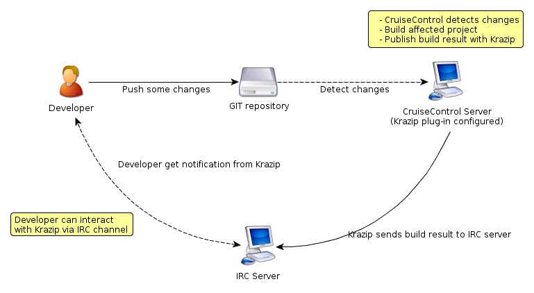

Krazip is a CruiseControl plug-in for sending live build results to an IRC channel. It also has functionality for interaction with user in IRC via commands. For instance, you can override the logging level by type "krazip logging new logging level". Krazip will override the logging level found in config.xml file. Details of the functionality will be described later.
Krazip was developed on CruiseControl version 2.8.4 and use external irclib.jar for IRC communication library. You can find more information and download the library file from http://moepii.sourceforge.net/
Krazip were developed by APDM Team at ABC Tech Ltd. (Thailand).
Presentations of Krazip:
To interact with Krazip. You just type "krazip" (or whichever IRC name that was configured) followed by a command. You send Krazip a private message by typing "/msg krazip command"
| Command | Description | Example |
|---|---|---|
| help | Display help message | krazip help |
| list | List project and following project | krazip list |
| projectName | Display latest build result | krazip someProjectName |
| logging | Display or Override current Krazip logging level | krazip logging or krazip logging {pass}{fail}{off} |
| follow | To follow a project | krazip follow someProjectName |
| unfollow | To stop following a project | krazip unfollow someProjectName |
In short, to install Krazip you need threes things. First CruiseControl that running OK. Secondly, a Krazip library which is the heart of the Krazip. And, finally, CruiseControl configuration of Krazip. Try to follow the steps below.
First of all, because Krazip is not a bundled plug-in with CruiseControl. Therefore, you need to register it within config.xml file. Please see the example of plug-in registration below.
<plugin name="krazip" classname="net.sourceforge.cruisecontrol.publishers.KrazipIRCPublisher"/>
The registration part comes right after the open cruisecontrol element.
Here you go. Now the plug-in is registered. Now, next step is to configure the Krazip it-self.
Krazip is the plug-in for sending build result. Therefore, the Krazip configration part is resides in publisher element. Please see below for more an example.
<publishers>
<krazip
host="irchost"
port="6667"
channel="#krazip"
resulturl="http://localhost:8080/cruisecontrol/buildresults/${project.name}" />
logginglevel="pass"
nickName="krazip"
</publishers>| Attribute | Description | Note |
| nickName | Nick to use on the irc server | *Optional* Defaults to "krazip" |
| host | URL for IRC server | *Required* |
| port | IRC port | *Optional* Default to 6667 |
| channel | IRC channel for Krazip to publish | *Required* |
| resulturl | An URL for log file | *Optional* (Set this if you want to append a link to build log when build fail) |
| logginglevel | Logging level for Krazip | *Optional* Can be "Pass", "Fail" or "off". Default is "Fail" (Report only fail or fixed build. |
| usenotice | Use NOTICE method for publishing message | *Optional* Set to "true" if you want to use NOTICE method |
<cruisecontrol>
<plugin name="krazip" classname="net.sourceforge.cruisecontrol.publishers.KrazipIRCPublisher"/>
<project name="connectfour">
<listeners>
<currentbuildstatuslistener file="logs/${project.name}/status.txt"/>
</listeners>
<bootstrappers>
<antbootstrapper anthome="apache-ant-1.7.0" buildfile="projects/${project.name}/build.xml" target="clean" />
</bootstrappers>
<modificationset quietperiod="15">
<!-- touch any file in connectfour project to trigger a build -->
<filesystem folder="projects/${project.name}"/>
</modificationset>
<schedule interval="30">
<ant anthome="apache-ant-1.7.0" buildfile="projects/${project.name}/build.xml"/>
</schedule>
<log>
<merge dir="projects/${project.name}/target/test-results"/>
</log>
<publishers>
<krazip host="somehost"
port="6667"
channel="#krazip"
resulturl="http://localhost:8080/cruisecontrol/buildresults/${project.name}" />
<onsuccess>
<artifactspublisher dest="artifacts/${project.name}" file="projects/${project.name}/target/${project.name}.jar"/>
</onsuccess>
</publishers>
</project>
</cruisecontrol>Normally when build failed, Krazip will report build result to IRC channel with message like below. You may don't want to do this if you already happy with the default behavior.
"krazip" build failed. Includes changes by pun@abctech-thailand.com. ((http://abctech-thailand.com/cruisecontrol/buildresults/krazip?log=log20101117154430))
By default, Krazip will retrieves build participant email from modification element in CruiseControl log. (Email or user if email is not found) Please see below for an example of cruisecontrol log...
<modification type="git">
<file action="modified">
<revision>1290418876</revision>
<filename>src/main/java/net/sourceforge/cruisecontrol/publishers/KrazipIRCPublisher.java</filename>
</file>
<file action="modified">
<revision>1290418876</revision>
<filename>src/site/apt/index.apt</filename>
</file>
<date>2010-11-22T09:41:16</date>
<user>Pongvech Vechprasit(Pun)</user>
<comment><![CDATA[Added instruction on how to mapping name in Krazip]]></comment>
<revision>1290418876</revision>
<email>pun@abctech-thailand.com</email>
</modification>
From the example CruiseControl log above. Krazip will use pun@abctech-thailand.com as a build participant. However if email is not found, user will be used instead.
If you want to use IRC nickname for reporting, you could mapping them with IRC nickname with krazip.properties file. The instruction is very easy. You just have to create the krazip.properties in CruiseControl root folder. Then add the mapping values like below.
pun@abctech-thailand.com = pun somebody@abctech-thailand.com = Somebody
From the example build message above, it will be turned into something like...
"krazip" build failed. Includes changes by pun. ((http://dev.abctech-thailand.com/cruisecontrol/buildresults/krazip?log=log20101117154430))
When developing Krazip, we need a cruisecontrol.jar as it required by Maven. (In the pom.xml). This jar file could not be found in Maven repository online. Therefore, we need to add the cruisecontrol.jar to local repo manually. Please follow the step below
mvn install:install-file -Dfile=cruisecontrol.jar -DgroupId=net.sourceforge.cruisecontrol -DartifactId=cruisecontrol -Dversion=2.8.4 -Dpackaging=jar